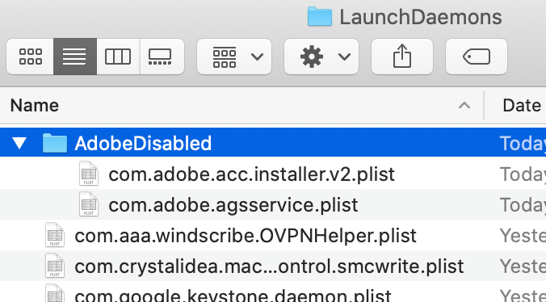

You can safely disable these processes without affecting your experience using Adobe Software.
To do so, follow the steps below:
- Close all Adobe Apps. This includes the Creative Cloud desktop app.
-
Disable CoreSync.
Adobe CoreSync automatically syncs documents with Adobe's servers, enabling seamless transitions between computers. Skip this step if you use CoreSync.- Open System Preferences > Extensions
- Uncheck the box immediately under Core Sync
-
Disable LaunchAgents and LaunchDaemons.
LaunchAgent and LaunchDaemon files instruct the OS to automatically run and re-launch headless background processes.
There are at minimum three such folders on macOS. They are:/Library/LaunchAgents,~/Library/LaunchAgents/, and/Library/LaunchDaemonsFollow these steps for all three folders:- In the Finder, use the menus
Go > Go to Folder(CMD+Shift+G) and enter a path listed above. - Create a new folder named
AdobeDisabled(or any other name, as long as you remember). You might have to authenticate with your administrator password. -
Move every
.plistfile with "Adobe" in the name inside the folder you created.
- Repeat these steps for each of the paths listed above.

~/Library/LaunchAgentsdid not exist, so I skipped that path. To restore the agents and daemons, simply revisit these folders and move the.plistfiles out of the folder you made. - In the Finder, use the menus
-
Terminate the running Adobe Processes
- Open Activity Monitor (Spotlight Search or go to
/Applications/Utilities/) - Use the menus
View > All Processesto show every running process. - Use the search bar to search for
adobe - On macOS Catalina (10.15) or later, shift-select all of the listed processes and press the X button in the toolbar (first from left). On macOS Mojave (10.14) or earlier, you cannot multi-select. Simply select each process individually and press the X button in the toolbar
- Press the Quit button

- Wait a few seconds to ensure that the processes close and do not re-launch. It is normal for AdobeIPCBroker to re-launch.
- Open Activity Monitor (Spotlight Search or go to
.plist files that you moved.